Validation humaine — passe G25
Chaque image montre, de gauche à droite : la maquette Claude Design ,
le rendu WordPress , et leur différence (les zones sombres sont les
écarts). Commencer par la sélection prioritaire ci-dessous — la revue tient en quelques minutes.
La fiche de décision associée est VALIDATION-HUMAINE-G26.md , livrée à côté de cette page.
Rien n'est validé d'office : le statut de chaque page est « À VALIDER » tant que vous ne l'avez pas
tranché.
1. Sélection prioritaire (24 comparaisons)

Accueil · 375 pxgauche : maquette Claude Design · milieu : WordPress · droite : différence (zones sombres = écarts) Écart volontaire : G26 : la note Google n’est plus affichée (non vérifiée) ; vignette d’auteur ajoutée au témoignage ; photos des deux cartes de prestation corrigées. Statut proposé : À VALIDER
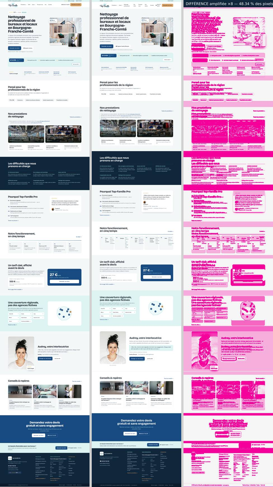
Accueil · 1440 pxgauche : maquette Claude Design · milieu : WordPress · droite : différence (zones sombres = écarts) Écart volontaire : G26 : la note Google n’est plus affichée (non vérifiée) ; vignette d’auteur ajoutée au témoignage ; photos des deux cartes de prestation corrigées. Statut proposé : À VALIDER

Page pilier · 375 pxgauche : maquette Claude Design · milieu : WordPress · droite : différence (zones sombres = écarts) Écart volontaire : Six vignettes de G25 conservées ; G26 y ajoute le visuel manquant de la bande « Cahier des charges, intervenants et suivi » et corrige la taille des intertitres. Statut proposé : À VALIDER
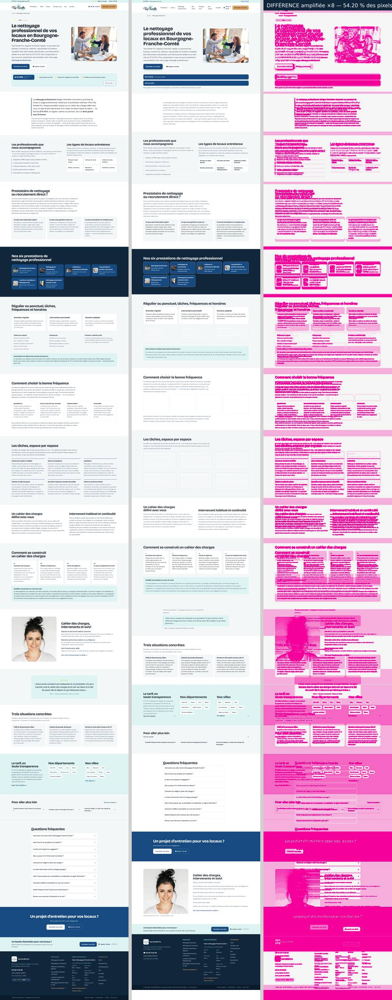
Page pilier · 1440 pxgauche : maquette Claude Design · milieu : WordPress · droite : différence (zones sombres = écarts) Écart volontaire : Six vignettes de G25 conservées ; G26 y ajoute le visuel manquant de la bande « Cahier des charges, intervenants et suivi » et corrige la taille des intertitres. Statut proposé : À VALIDER

Prestation (bureaux) · 375 pxgauche : maquette Claude Design · milieu : WordPress · droite : différence (zones sombres = écarts) Écart volontaire : G26 : le visuel de hero était CROISÉ avec celui d’une page de ville — corrigé sur les octets. Statut proposé : À VALIDER
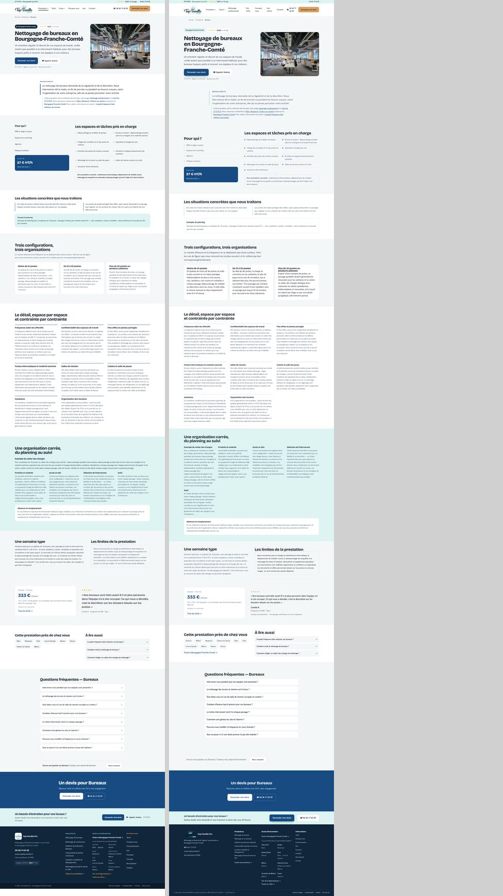
Prestation (bureaux) · 1440 pxgauche : maquette Claude Design · milieu : WordPress · droite : différence (zones sombres = écarts) Écart volontaire : G26 : le visuel de hero était CROISÉ avec celui d’une page de ville — corrigé sur les octets. Statut proposé : À VALIDER

Ville (Dijon) · 375 pxgauche : maquette Claude Design · milieu : WordPress · droite : différence (zones sombres = écarts) Statut proposé : À VALIDER
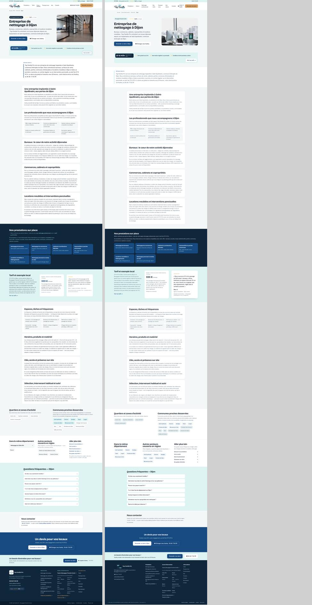
Ville (Dijon) · 1440 pxgauche : maquette Claude Design · milieu : WordPress · droite : différence (zones sombres = écarts) Statut proposé : À VALIDER
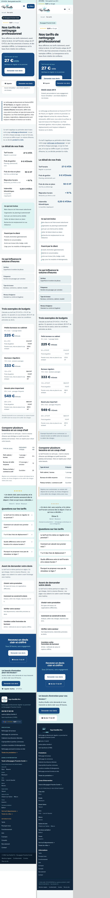
Tarifs · 375 pxgauche : maquette Claude Design · milieu : WordPress · droite : différence (zones sombres = écarts) Écart volontaire : Témoignage nu et centré comme la maquette ; la note Google n’y figure plus tant qu’elle n’est pas vérifiable (G26 §7). Statut proposé : À VALIDER
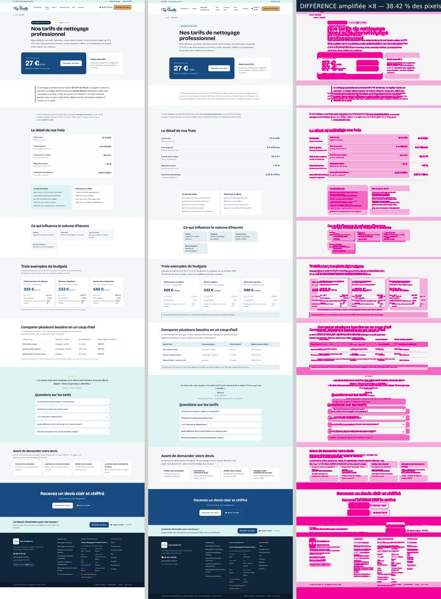
Tarifs · 1440 pxgauche : maquette Claude Design · milieu : WordPress · droite : différence (zones sombres = écarts) Écart volontaire : Témoignage nu et centré comme la maquette ; la note Google n’y figure plus tant qu’elle n’est pas vérifiable (G26 §7). Statut proposé : À VALIDER
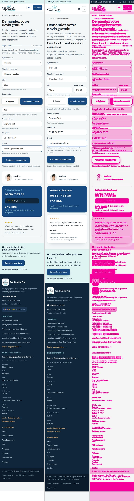
Formulaire — étape 1 · 375 pxgauche : maquette Claude Design · milieu : WordPress · droite : différence (zones sombres = écarts) Écart volontaire : Capture faite avec les MÊMES données des deux côtés (protocole G26 §6). Les différences de champs restantes sont listées dans docs/FORMULAIRE-DIFFERENCES.md — ce dossier n’affirme pas « mêmes champs ». Statut proposé : À VALIDER
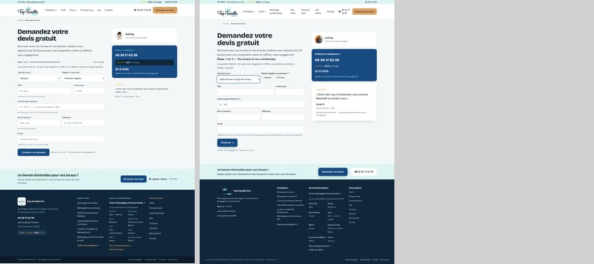
Formulaire — étape 1 · 1440 pxgauche : maquette Claude Design · milieu : WordPress · droite : différence (zones sombres = écarts) Écart volontaire : Capture faite avec les MÊMES données des deux côtés (protocole G26 §6). Les différences de champs restantes sont listées dans docs/FORMULAIRE-DIFFERENCES.md — ce dossier n’affirme pas « mêmes champs ». Statut proposé : À VALIDER
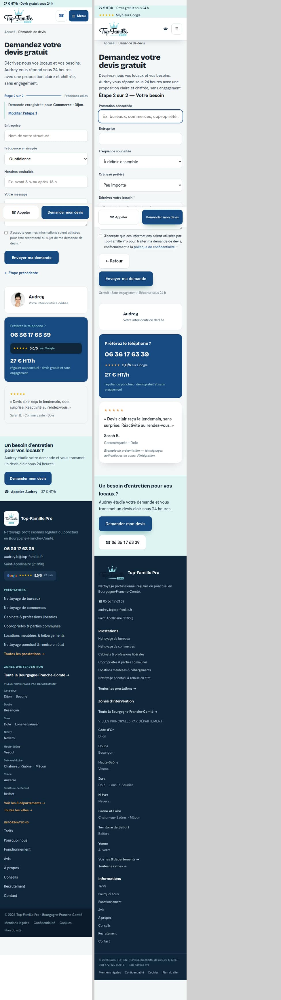
Formulaire — étape 2 · 375 pxgauche : maquette Claude Design · milieu : WordPress · droite : différence (zones sombres = écarts) Écart volontaire : Étape 2 vérifiée atteinte des deux côtés avant capture ; valeurs relevées champ par champ dans docs/FORMULAIRE-CAPTURES.md. Statut proposé : À VALIDER
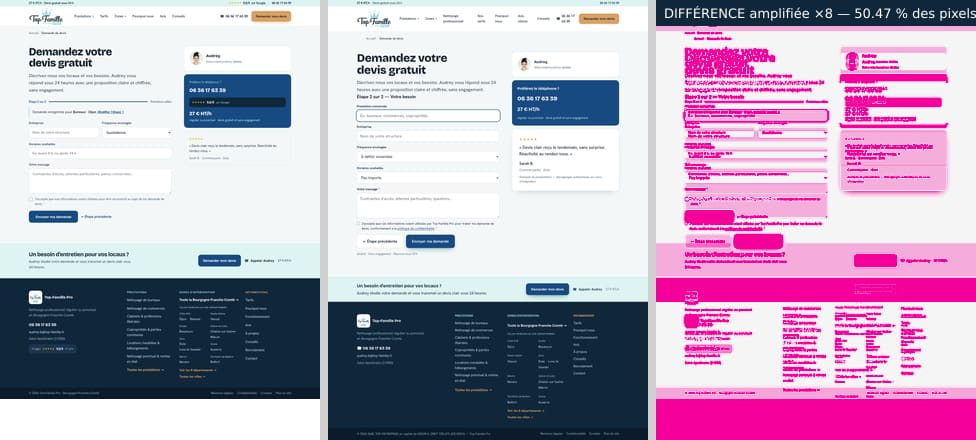
Formulaire — étape 2 · 1440 pxgauche : maquette Claude Design · milieu : WordPress · droite : différence (zones sombres = écarts) Écart volontaire : Étape 2 vérifiée atteinte des deux côtés avant capture ; valeurs relevées champ par champ dans docs/FORMULAIRE-CAPTURES.md. Statut proposé : À VALIDER
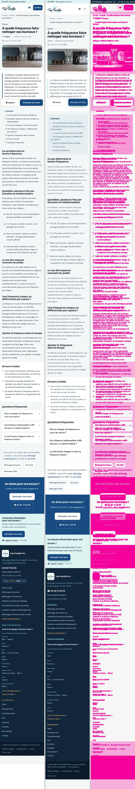
Article (fréquence bureaux) · 375 pxgauche : maquette Claude Design · milieu : WordPress · droite : différence (zones sombres = écarts) Statut proposé : À VALIDER
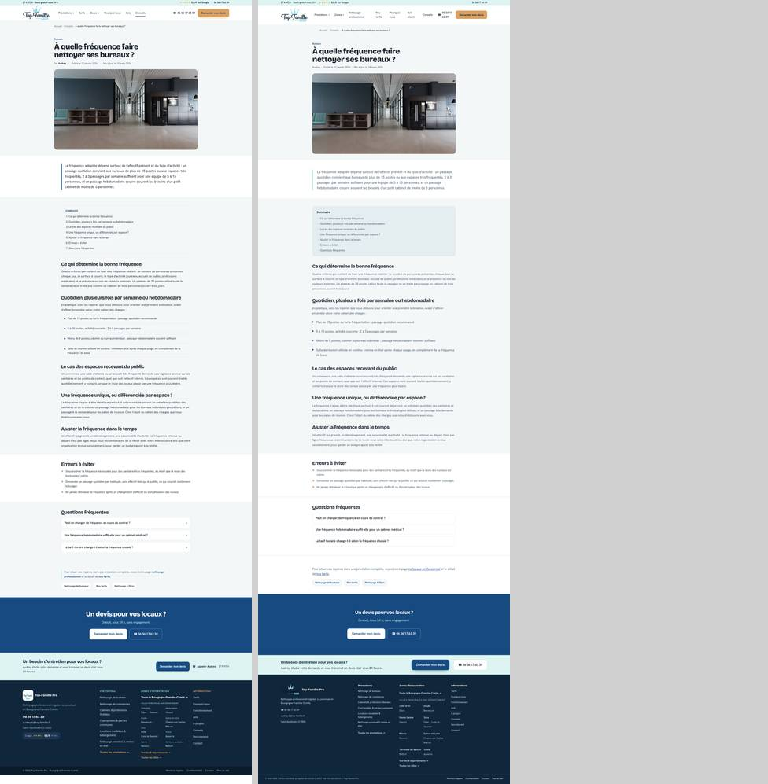
Article (fréquence bureaux) · 1440 pxgauche : maquette Claude Design · milieu : WordPress · droite : différence (zones sombres = écarts) Statut proposé : À VALIDER
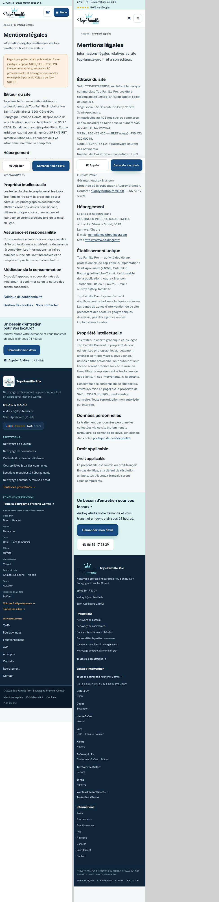
Mentions légales · 375 pxgauche : maquette Claude Design · milieu : WordPress · droite : différence (zones sombres = écarts) Écart volontaire : Contenu réglementaire plus complet que la maquette — hors tolérance de hauteur ASSUMÉ (exception prévue). Statut proposé : À VALIDER
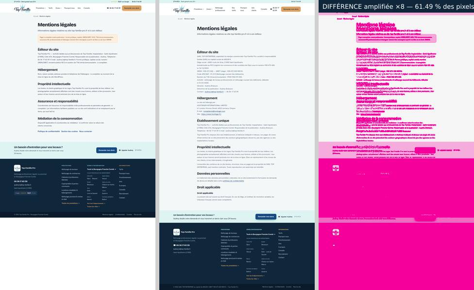
Mentions légales · 1440 pxgauche : maquette Claude Design · milieu : WordPress · droite : différence (zones sombres = écarts) Écart volontaire : Contenu réglementaire plus complet que la maquette — hors tolérance de hauteur ASSUMÉ (exception prévue). Statut proposé : À VALIDER
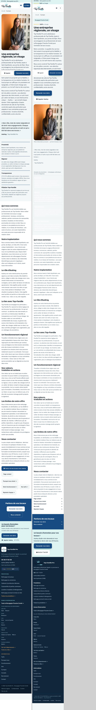
À propos · 375 pxgauche : maquette Claude Design · milieu : WordPress · droite : différence (zones sombres = écarts) Écart volontaire : G26 §4 : image à gauche sur ordinateur et avant le texte sur mobile, citation dans sa bande, quatre valeurs sans mention de provisoire erronée, commandes en rangées de boutons. Portrait toujours signalé comme illustration (§5.6). Statut proposé : À VALIDER
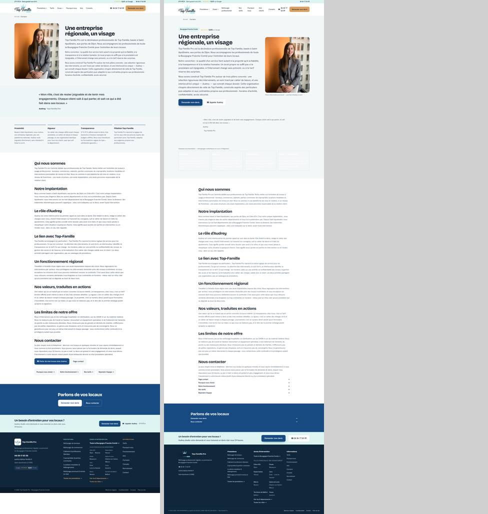
À propos · 1440 pxgauche : maquette Claude Design · milieu : WordPress · droite : différence (zones sombres = écarts) Écart volontaire : G26 §4 : image à gauche sur ordinateur et avant le texte sur mobile, citation dans sa bande, quatre valeurs sans mention de provisoire erronée, commandes en rangées de boutons. Portrait toujours signalé comme illustration (§5.6). Statut proposé : À VALIDER
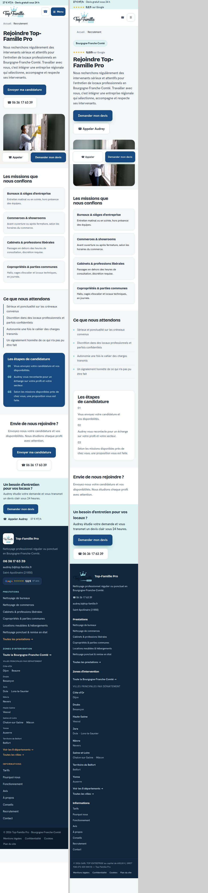
Recrutement · 375 pxgauche : maquette Claude Design · milieu : WordPress · droite : différence (zones sombres = écarts) Écart volontaire : G26 §5 : le hero porte le parcours de candidature et non les appels commerciaux ; panneau des étapes en marine ; candidature vers le site carrière (CLAUDE.md §8). Statut proposé : À VALIDER
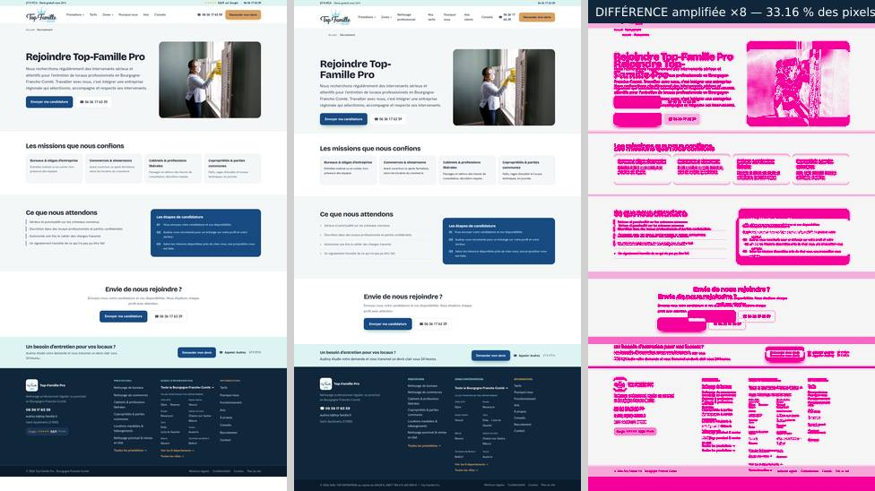
Recrutement · 1440 pxgauche : maquette Claude Design · milieu : WordPress · droite : différence (zones sombres = écarts) Écart volontaire : G26 §5 : le hero porte le parcours de candidature et non les appels commerciaux ; panneau des étapes en marine ; candidature vers le site carrière (CLAUDE.md §8). Statut proposé : À VALIDER
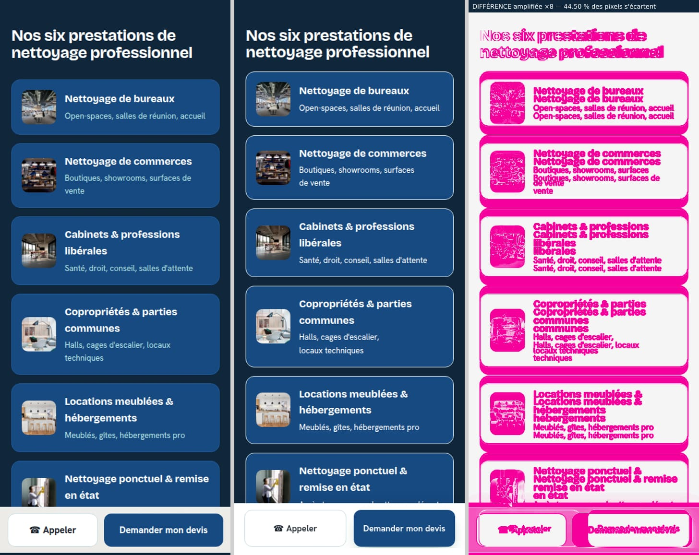
Zoom — bande des six vignettes du pilier · 375 pxgauche : maquette Claude Design · milieu : WordPress · droite : différence (zones sombres = écarts) Écart volontaire : Comparaison rapprochée de la bande ajoutée en G25, régénérée avec le panneau de différence réparé en G26 §2. Statut proposé : À VALIDER
Zoom — bande des six vignettes du pilier · 1440 pxgauche : maquette Claude Design · milieu : WordPress · droite : différence (zones sombres = écarts) Écart volontaire : Comparaison rapprochée de la bande ajoutée en G25, régénérée avec le panneau de différence réparé en G26 §2. Statut proposé : À VALIDER
2. Toutes les autres comparaisons (88)
Déplier les 88 triptyques restants
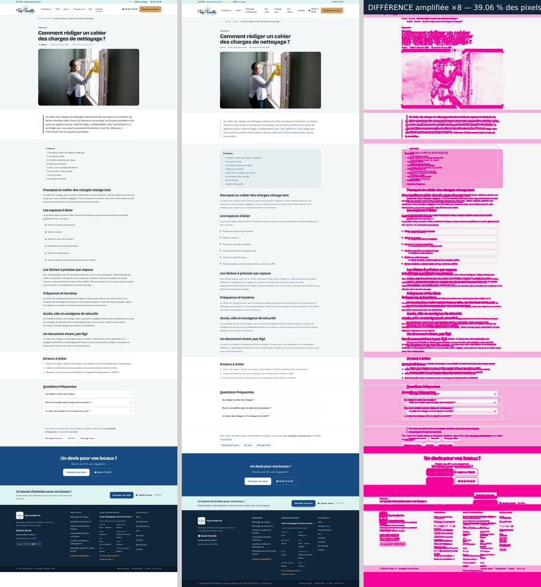
article-cahier-des-charges-nettoyage · 1440 pxgauche : maquette Claude Design · milieu : WordPress · droite : différence (zones sombres = écarts) Statut proposé : À VALIDER
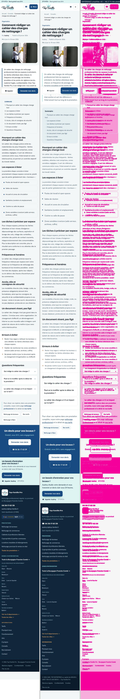
article-cahier-des-charges-nettoyage · 375 pxgauche : maquette Claude Design · milieu : WordPress · droite : différence (zones sombres = écarts) Statut proposé : À VALIDER
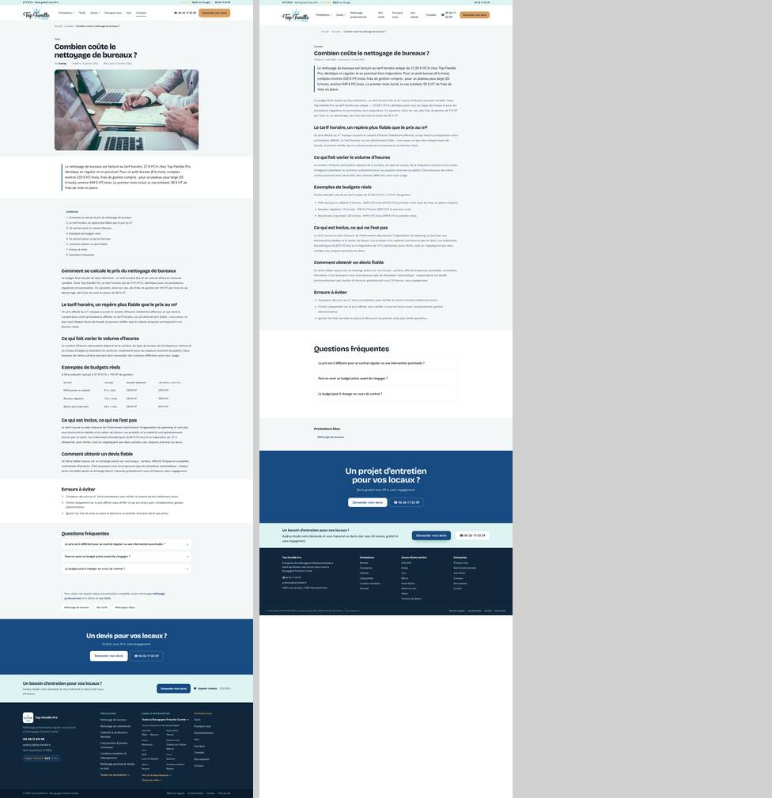
article-cout-nettoyage-bureaux · 1440 pxgauche : maquette Claude Design · milieu : WordPress · droite : différence (zones sombres = écarts) Statut proposé : À VALIDER
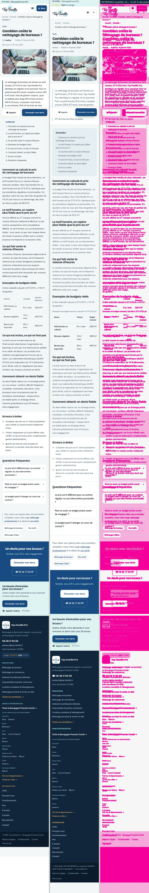
article-cout-nettoyage-bureaux · 375 pxgauche : maquette Claude Design · milieu : WordPress · droite : différence (zones sombres = écarts) Statut proposé : À VALIDER
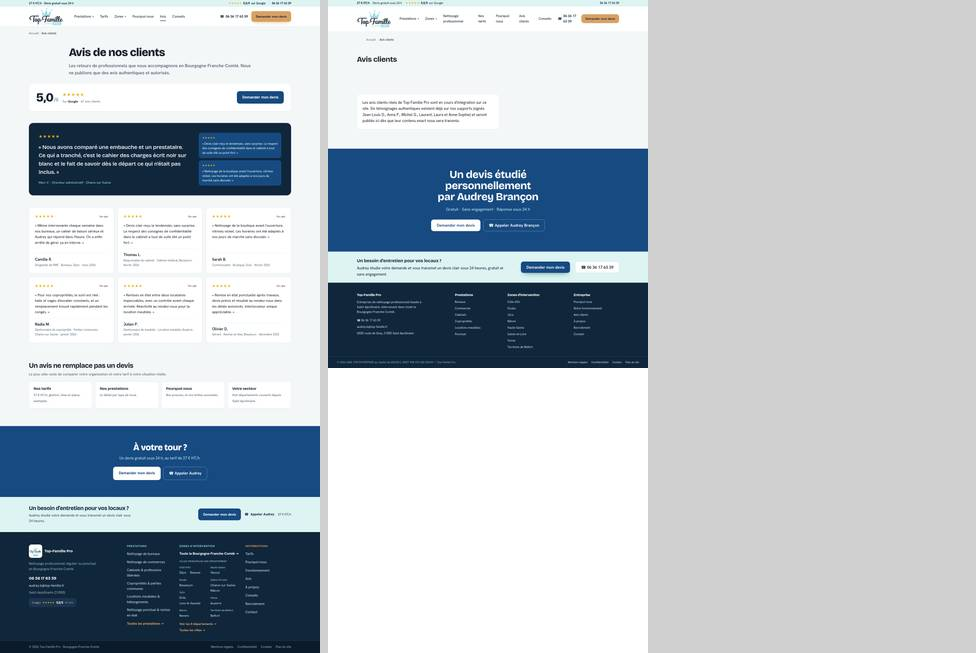
avis-clients · 1440 pxgauche : maquette Claude Design · milieu : WordPress · droite : différence (zones sombres = écarts) Statut proposé : À VALIDER
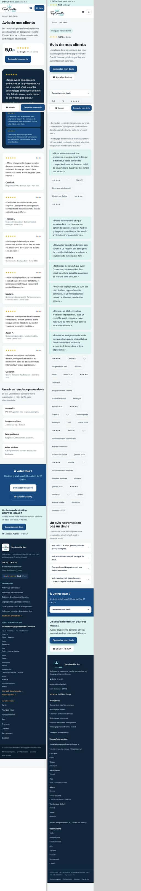
avis-clients · 375 pxgauche : maquette Claude Design · milieu : WordPress · droite : différence (zones sombres = écarts) Statut proposé : À VALIDER
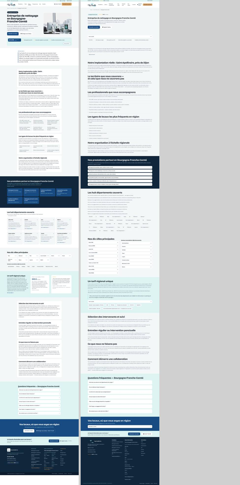
bourgogne-franche-comte · 1440 pxgauche : maquette Claude Design · milieu : WordPress · droite : différence (zones sombres = écarts) Statut proposé : À VALIDER
bourgogne-franche-comte · 375 pxgauche : maquette Claude Design · milieu : WordPress · droite : différence (zones sombres = écarts) Statut proposé : À VALIDER
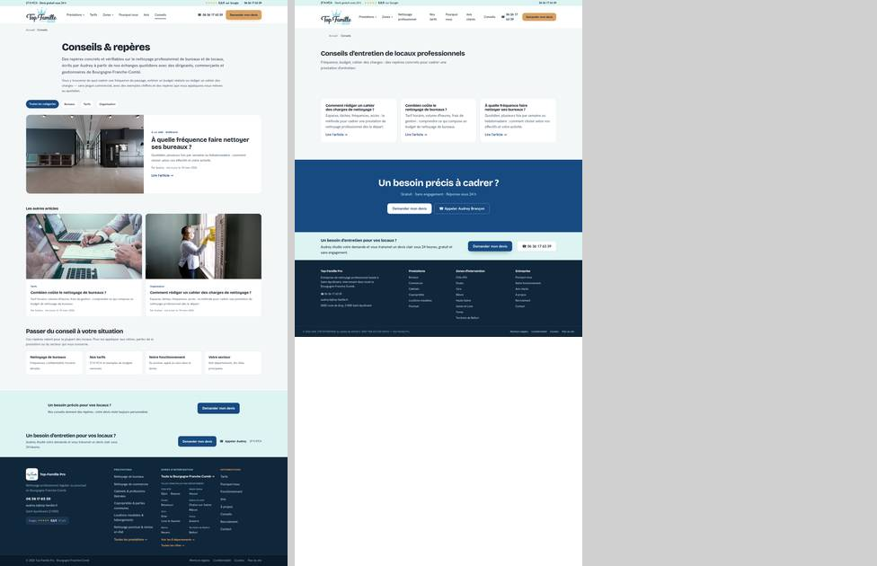
conseils · 1440 pxgauche : maquette Claude Design · milieu : WordPress · droite : différence (zones sombres = écarts) Statut proposé : À VALIDER
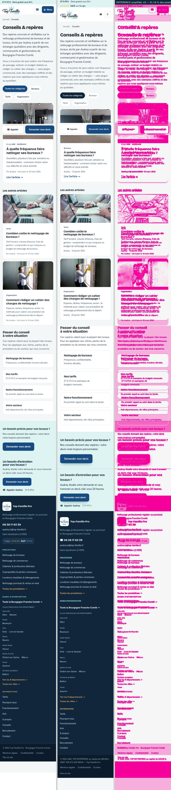
conseils · 375 pxgauche : maquette Claude Design · milieu : WordPress · droite : différence (zones sombres = écarts) Statut proposé : À VALIDER
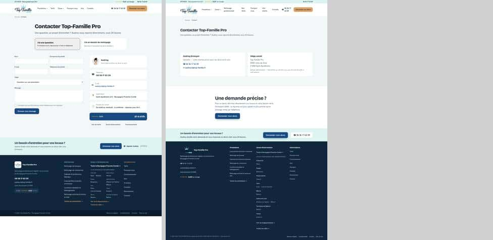
contact · 1440 pxgauche : maquette Claude Design · milieu : WordPress · droite : différence (zones sombres = écarts) Statut proposé : À VALIDER
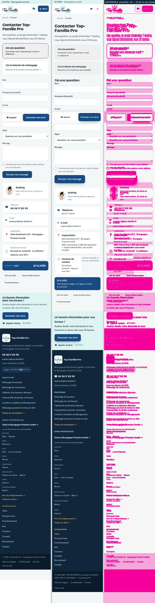
contact · 375 pxgauche : maquette Claude Design · milieu : WordPress · droite : différence (zones sombres = écarts) Statut proposé : À VALIDER
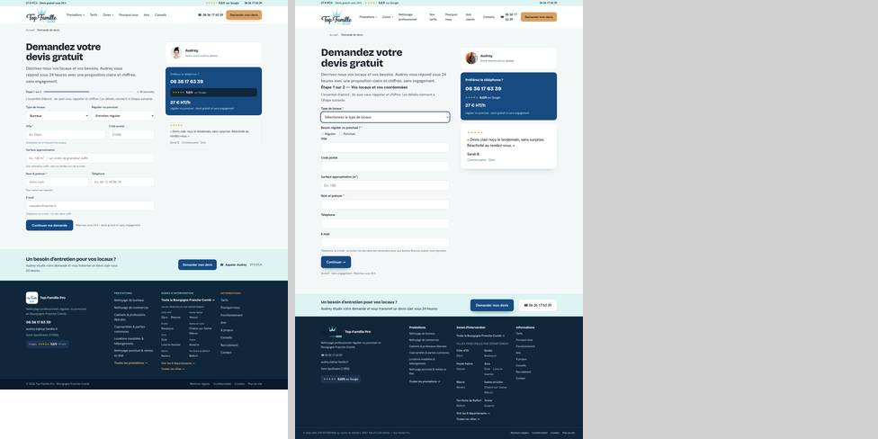
demande-de-devis · 1440 pxgauche : maquette Claude Design · milieu : WordPress · droite : différence (zones sombres = écarts) Statut proposé : À VALIDER
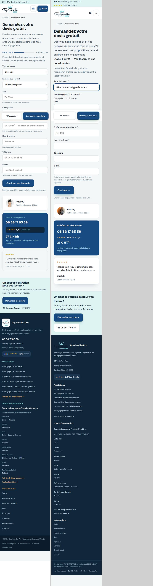
demande-de-devis · 375 pxgauche : maquette Claude Design · milieu : WordPress · droite : différence (zones sombres = écarts) Statut proposé : À VALIDER
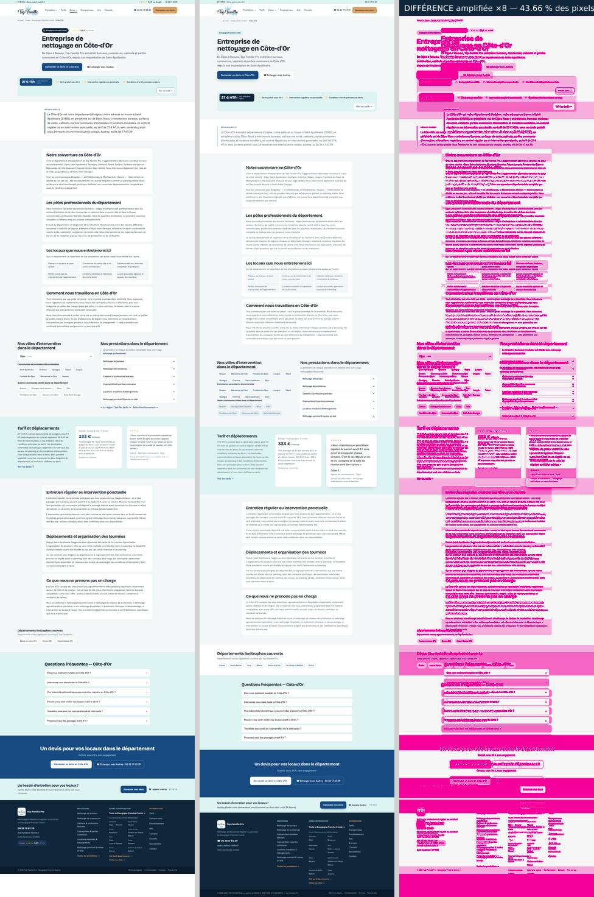
departement-cote-dor · 1440 pxgauche : maquette Claude Design · milieu : WordPress · droite : différence (zones sombres = écarts) Statut proposé : À VALIDER

departement-cote-dor · 375 pxgauche : maquette Claude Design · milieu : WordPress · droite : différence (zones sombres = écarts) Statut proposé : À VALIDER
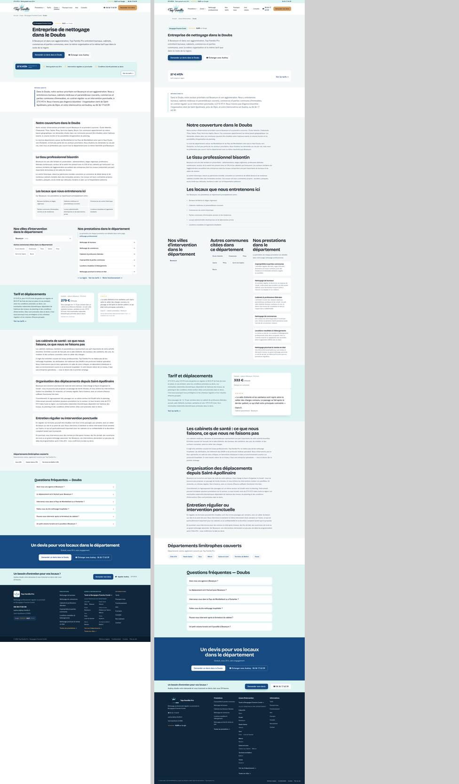
departement-doubs · 1440 pxgauche : maquette Claude Design · milieu : WordPress · droite : différence (zones sombres = écarts) Statut proposé : À VALIDER
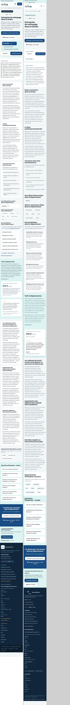
departement-doubs · 375 pxgauche : maquette Claude Design · milieu : WordPress · droite : différence (zones sombres = écarts) Statut proposé : À VALIDER
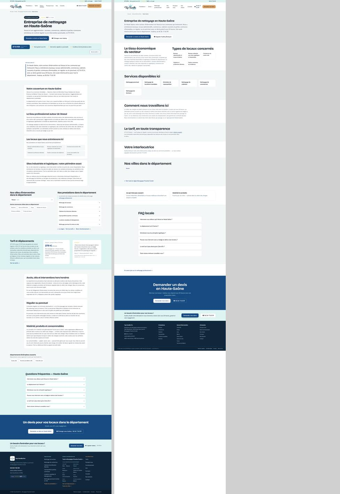
departement-haute-saone · 1440 pxgauche : maquette Claude Design · milieu : WordPress · droite : différence (zones sombres = écarts) Statut proposé : À VALIDER
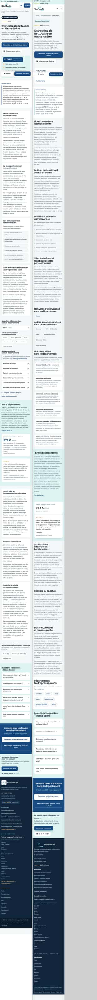
departement-haute-saone · 375 pxgauche : maquette Claude Design · milieu : WordPress · droite : différence (zones sombres = écarts) Statut proposé : À VALIDER
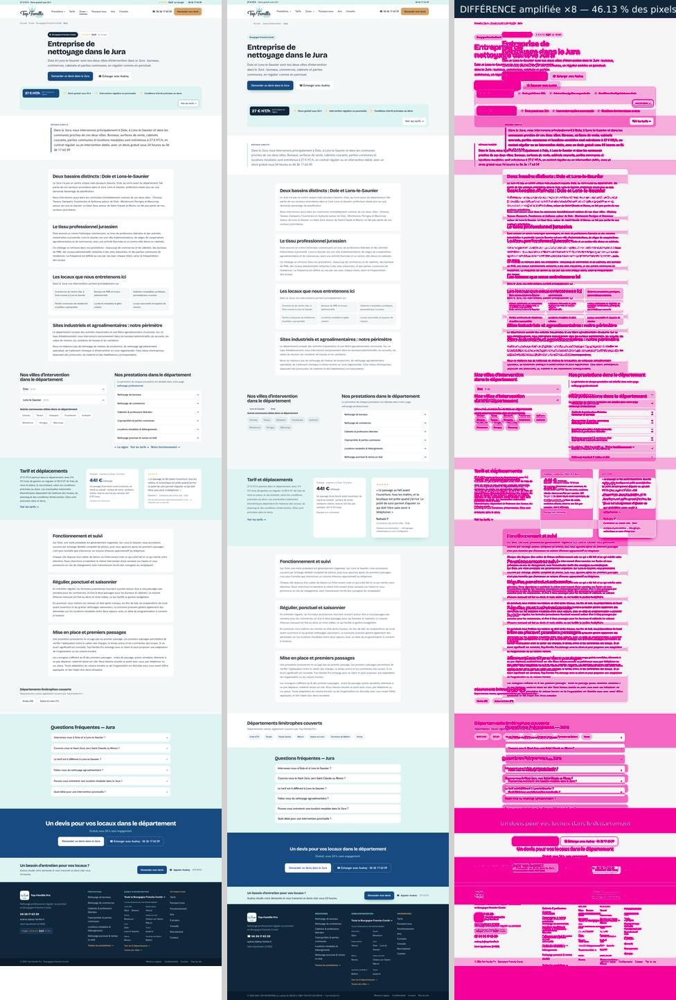
departement-jura · 1440 pxgauche : maquette Claude Design · milieu : WordPress · droite : différence (zones sombres = écarts) Statut proposé : À VALIDER
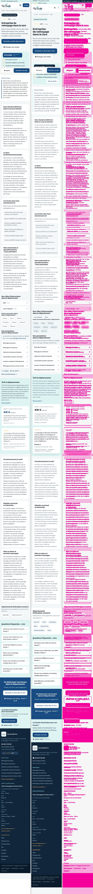
departement-jura · 375 pxgauche : maquette Claude Design · milieu : WordPress · droite : différence (zones sombres = écarts) Statut proposé : À VALIDER
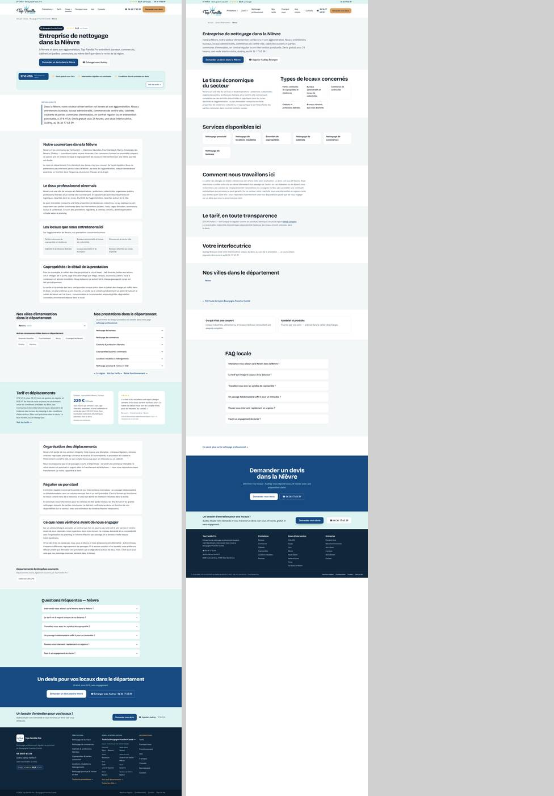
departement-nievre · 1440 pxgauche : maquette Claude Design · milieu : WordPress · droite : différence (zones sombres = écarts) Statut proposé : À VALIDER
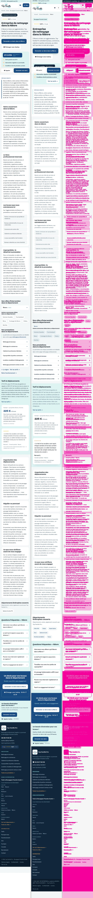
departement-nievre · 375 pxgauche : maquette Claude Design · milieu : WordPress · droite : différence (zones sombres = écarts) Statut proposé : À VALIDER
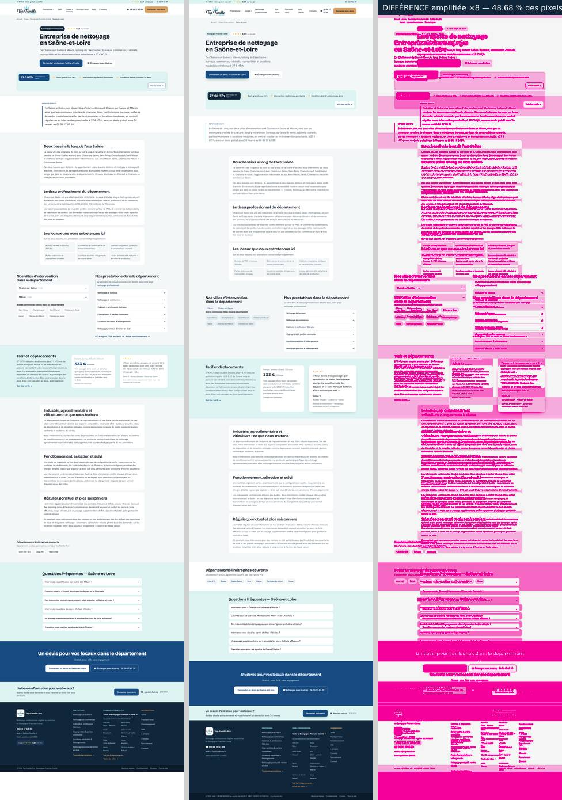
departement-saone-et-loire · 1440 pxgauche : maquette Claude Design · milieu : WordPress · droite : différence (zones sombres = écarts) Statut proposé : À VALIDER
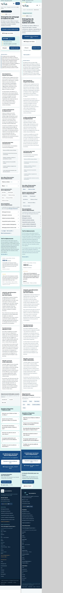
departement-saone-et-loire · 375 pxgauche : maquette Claude Design · milieu : WordPress · droite : différence (zones sombres = écarts) Statut proposé : À VALIDER
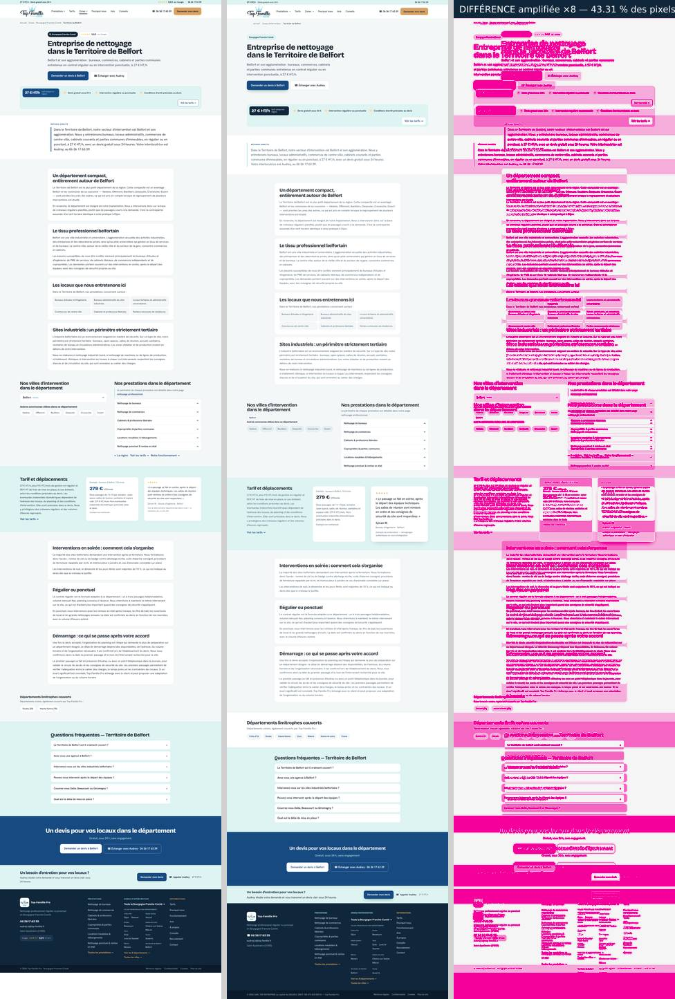
departement-territoire-de-belfort · 1440 pxgauche : maquette Claude Design · milieu : WordPress · droite : différence (zones sombres = écarts) Statut proposé : À VALIDER
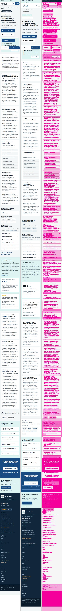
departement-territoire-de-belfort · 375 pxgauche : maquette Claude Design · milieu : WordPress · droite : différence (zones sombres = écarts) Statut proposé : À VALIDER
departement-yonne · 1440 pxgauche : maquette Claude Design · milieu : WordPress · droite : différence (zones sombres = écarts) Statut proposé : À VALIDER
departement-yonne · 375 pxgauche : maquette Claude Design · milieu : WordPress · droite : différence (zones sombres = écarts) Statut proposé : À VALIDER
gestion-des-cookies · 1440 pxgauche : maquette Claude Design · milieu : WordPress · droite : différence (zones sombres = écarts) Statut proposé : À VALIDER
gestion-des-cookies · 375 pxgauche : maquette Claude Design · milieu : WordPress · droite : différence (zones sombres = écarts) Statut proposé : À VALIDER
nos-prestations · 1440 pxgauche : maquette Claude Design · milieu : WordPress · droite : différence (zones sombres = écarts) Statut proposé : À VALIDER
nos-prestations · 375 pxgauche : maquette Claude Design · milieu : WordPress · droite : différence (zones sombres = écarts) Statut proposé : À VALIDER
notre-fonctionnement · 1440 pxgauche : maquette Claude Design · milieu : WordPress · droite : différence (zones sombres = écarts) Statut proposé : À VALIDER
notre-fonctionnement · 375 pxgauche : maquette Claude Design · milieu : WordPress · droite : différence (zones sombres = écarts) Statut proposé : À VALIDER
plan-du-site · 1440 pxgauche : maquette Claude Design · milieu : WordPress · droite : différence (zones sombres = écarts) Statut proposé : À VALIDER
plan-du-site · 375 pxgauche : maquette Claude Design · milieu : WordPress · droite : différence (zones sombres = écarts) Statut proposé : À VALIDER
politique-de-confidentialite · 1440 pxgauche : maquette Claude Design · milieu : WordPress · droite : différence (zones sombres = écarts) Statut proposé : À VALIDER
politique-de-confidentialite · 375 pxgauche : maquette Claude Design · milieu : WordPress · droite : différence (zones sombres = écarts) Statut proposé : À VALIDER
pourquoi-top-famille-pro · 1440 pxgauche : maquette Claude Design · milieu : WordPress · droite : différence (zones sombres = écarts) Statut proposé : À VALIDER
pourquoi-top-famille-pro · 375 pxgauche : maquette Claude Design · milieu : WordPress · droite : différence (zones sombres = écarts) Statut proposé : À VALIDER
service-cabinets · 1440 pxgauche : maquette Claude Design · milieu : WordPress · droite : différence (zones sombres = écarts) Statut proposé : À VALIDER
service-cabinets · 375 pxgauche : maquette Claude Design · milieu : WordPress · droite : différence (zones sombres = écarts) Statut proposé : À VALIDER
service-commerces · 1440 pxgauche : maquette Claude Design · milieu : WordPress · droite : différence (zones sombres = écarts) Statut proposé : À VALIDER
service-commerces · 375 pxgauche : maquette Claude Design · milieu : WordPress · droite : différence (zones sombres = écarts) Statut proposé : À VALIDER
service-coproprietes · 1440 pxgauche : maquette Claude Design · milieu : WordPress · droite : différence (zones sombres = écarts) Statut proposé : À VALIDER
service-coproprietes · 375 pxgauche : maquette Claude Design · milieu : WordPress · droite : différence (zones sombres = écarts) Statut proposé : À VALIDER
service-meubles · 1440 pxgauche : maquette Claude Design · milieu : WordPress · droite : différence (zones sombres = écarts) Statut proposé : À VALIDER
service-meubles · 375 pxgauche : maquette Claude Design · milieu : WordPress · droite : différence (zones sombres = écarts) Statut proposé : À VALIDER
service-ponctuel · 1440 pxgauche : maquette Claude Design · milieu : WordPress · droite : différence (zones sombres = écarts) Statut proposé : À VALIDER
service-ponctuel · 375 pxgauche : maquette Claude Design · milieu : WordPress · droite : différence (zones sombres = écarts) Statut proposé : À VALIDER
ville-auxerre · 1440 pxgauche : maquette Claude Design · milieu : WordPress · droite : différence (zones sombres = écarts) Statut proposé : À VALIDER
ville-auxerre · 375 pxgauche : maquette Claude Design · milieu : WordPress · droite : différence (zones sombres = écarts) Statut proposé : À VALIDER
ville-beaune · 1440 pxgauche : maquette Claude Design · milieu : WordPress · droite : différence (zones sombres = écarts) Statut proposé : À VALIDER
ville-beaune · 375 pxgauche : maquette Claude Design · milieu : WordPress · droite : différence (zones sombres = écarts) Statut proposé : À VALIDER
ville-belfort · 1440 pxgauche : maquette Claude Design · milieu : WordPress · droite : différence (zones sombres = écarts) Statut proposé : À VALIDER
ville-belfort · 375 pxgauche : maquette Claude Design · milieu : WordPress · droite : différence (zones sombres = écarts) Statut proposé : À VALIDER
ville-besancon · 1440 pxgauche : maquette Claude Design · milieu : WordPress · droite : différence (zones sombres = écarts) Statut proposé : À VALIDER
ville-besancon · 375 pxgauche : maquette Claude Design · milieu : WordPress · droite : différence (zones sombres = écarts) Statut proposé : À VALIDER
ville-chalon-sur-saone · 1440 pxgauche : maquette Claude Design · milieu : WordPress · droite : différence (zones sombres = écarts) Statut proposé : À VALIDER
ville-chalon-sur-saone · 375 pxgauche : maquette Claude Design · milieu : WordPress · droite : différence (zones sombres = écarts) Statut proposé : À VALIDER
ville-chenove · 1440 pxgauche : maquette Claude Design · milieu : WordPress · droite : différence (zones sombres = écarts) Statut proposé : À VALIDER
ville-chenove · 375 pxgauche : maquette Claude Design · milieu : WordPress · droite : différence (zones sombres = écarts) Statut proposé : À VALIDER
ville-dole · 1440 pxgauche : maquette Claude Design · milieu : WordPress · droite : différence (zones sombres = écarts) Statut proposé : À VALIDER
ville-dole · 375 pxgauche : maquette Claude Design · milieu : WordPress · droite : différence (zones sombres = écarts) Statut proposé : À VALIDER
ville-fontaine-les-dijon · 1440 pxgauche : maquette Claude Design · milieu : WordPress · droite : différence (zones sombres = écarts) Statut proposé : À VALIDER
ville-fontaine-les-dijon · 375 pxgauche : maquette Claude Design · milieu : WordPress · droite : différence (zones sombres = écarts) Statut proposé : À VALIDER
ville-longvic · 1440 pxgauche : maquette Claude Design · milieu : WordPress · droite : différence (zones sombres = écarts) Statut proposé : À VALIDER
ville-longvic · 375 pxgauche : maquette Claude Design · milieu : WordPress · droite : différence (zones sombres = écarts) Statut proposé : À VALIDER
ville-lons-le-saunier · 1440 pxgauche : maquette Claude Design · milieu : WordPress · droite : différence (zones sombres = écarts) Statut proposé : À VALIDER
ville-lons-le-saunier · 375 pxgauche : maquette Claude Design · milieu : WordPress · droite : différence (zones sombres = écarts) Statut proposé : À VALIDER
ville-macon · 1440 pxgauche : maquette Claude Design · milieu : WordPress · droite : différence (zones sombres = écarts) Statut proposé : À VALIDER
ville-macon · 375 pxgauche : maquette Claude Design · milieu : WordPress · droite : différence (zones sombres = écarts) Statut proposé : À VALIDER
ville-marsannay-la-cote · 1440 pxgauche : maquette Claude Design · milieu : WordPress · droite : différence (zones sombres = écarts) Statut proposé : À VALIDER
ville-marsannay-la-cote · 375 pxgauche : maquette Claude Design · milieu : WordPress · droite : différence (zones sombres = écarts) Statut proposé : À VALIDER
ville-nevers · 1440 pxgauche : maquette Claude Design · milieu : WordPress · droite : différence (zones sombres = écarts) Statut proposé : À VALIDER
ville-nevers · 375 pxgauche : maquette Claude Design · milieu : WordPress · droite : différence (zones sombres = écarts) Statut proposé : À VALIDER
ville-quetigny · 1440 pxgauche : maquette Claude Design · milieu : WordPress · droite : différence (zones sombres = écarts) Statut proposé : À VALIDER
ville-quetigny · 375 pxgauche : maquette Claude Design · milieu : WordPress · droite : différence (zones sombres = écarts) Statut proposé : À VALIDER
ville-saint-apollinaire · 1440 pxgauche : maquette Claude Design · milieu : WordPress · droite : différence (zones sombres = écarts) Statut proposé : À VALIDER
ville-saint-apollinaire · 375 pxgauche : maquette Claude Design · milieu : WordPress · droite : différence (zones sombres = écarts) Statut proposé : À VALIDER
ville-talant · 1440 pxgauche : maquette Claude Design · milieu : WordPress · droite : différence (zones sombres = écarts) Statut proposé : À VALIDER
ville-talant · 375 pxgauche : maquette Claude Design · milieu : WordPress · droite : différence (zones sombres = écarts) Statut proposé : À VALIDER
ville-vesoul · 1440 pxgauche : maquette Claude Design · milieu : WordPress · droite : différence (zones sombres = écarts) Statut proposé : À VALIDER
ville-vesoul · 375 pxgauche : maquette Claude Design · milieu : WordPress · droite : différence (zones sombres = écarts) Statut proposé : À VALIDER
zones-intervention · 1440 pxgauche : maquette Claude Design · milieu : WordPress · droite : différence (zones sombres = écarts) Statut proposé : À VALIDER
zones-intervention · 375 pxgauche : maquette Claude Design · milieu : WordPress · droite : différence (zones sombres = écarts) Statut proposé : À VALIDER